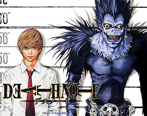

Muerte paranoica
 De: La Frikipedia, la enciclopedia extremadamente seria.
De: La Frikipedia, la enciclopedia extremadamente seria.

|
ATENCIÓN
Este artículo contiene demasiados tachones y en vez de provocar gracia, parece los apuntes de un niño de preescolar. Ya puede ser porque el autor es un novato, bien es un topo sin vista, o simplemente algún n00b que se cree que abusar del chiste mierdoso mola y no se da cuenta que jode bastante el artículo. Así que coge la goma de borrar y discusión del artículo, puede que te ayude en algo.
|
Si siempre ha habido alguien que te tocaba los cojones hasta más no poder que te molestaba y lo odias a muerte, sigue leyendo.
 De este anime surgió esta
gilipollez idea
Historia
La muerte paranoica surgió después de que un par de gilipollas aburridos frikis se tragaran toda la serie de Death Note(como si durase mucho) y la imitasen, pero reemplazando todas esas "muertes normales"(claro como que ahora nos da un ataque al corazón porque si) por paranoias raras y cosas sin sentido (puta subnormalidad).
Qué consigo haciendo esta gilipollez?
Pues la verdad es que nada pero te distraes y así evitas pasarte todo el puto día viendo hentai en internet.
Materiales necesarios
Para hacer tu propia Muerte paranoica, necesitas:
- Libreta, papel, una persona, tu perro, un amigo o algo sobre donde puedas escribir.
- Lápiz, boli, sangre tuya, de un amigo, un trozo de pan, una taladradora o qualquier otra cosa con la que puedas escribir.
- Una víctima (el tio del chino de la esquina, el niño del parque que siempre te mira mal...)
- (Opcional) Tener una Death Note.
- (Opcional) Creer que eres Kira y pensar que matando gente purificas el mundo.
Cómo hacer una muerte paranoica
1. Ten en mente el nombre y la cara de la víctima.
2. Coje el lápiz, el boli o en su defecto sangre con el que vayas a escribir.
3. Pon el lápiz sobre la libreta, papel, persona, animal o pared sobre el que vayas a escribir.
4. Escribe las cosas más gilipollas y subnormales paranoicas que se te ocurran.
5.(opcional) Muéstrale tu obra a tu profesor, a tus padres o a la víctima (quedarás como todo un Kira)
PD: No me hago responsable de que tus paranoias se hagan realidad. (sí claro)
PDD: No hace falta que te compres una Death note para hacer una muerte paranoica.
PDDD: Ya estoy hasta los mismísimos huevos harto de seguir escribiendo.
Gente que tiene el hábito de hacerlas
Muertes paranoicas
- Adri, muere tras clavarse una goma de borrar marca Milan Nata en el cuello y desangrarse, mientras se desangra verá como el Matías e Isaac se enfrentan al niño agresivo del youtube. Lo vencerán con la ayuda de un ordenador portátil. Luego Matías renacerá con una cola de fénix de FF7. Cuando hayan vuelto del AVE, Matías luchará con un mono capaz de usar la Colleja Windows creando un agujero negro supermasivo que puede engullir la tierra en el proceso, entonces las gaviotas caerán en forma de precipitación y al impactar con el suelo, se quedarán en forma gelatinosa. Luego Adri se transformará en Diox y matará un par de Wombats que habían por ahí, y, después de resbalar con una pela de plátano que había en el aire, se romperá el cuello con un taburete que estaba situado específicamente ahí.
- Eric muere tras comer un perrito en mal estado. Empieza a vomitar y excretar por la calle. Justo entonces aparce su profesor de matematicas (el señor Santa Claus) hablando solo sobre cosas acabadoas en or: "El divisor, el constructor, el cantor, matador, Salvador...". Justo entoneces le explota la cabeza por el efecto de la risa y los vomitos combinados. Del agujero nace una nueva cabeza llamada asdf. Va en direccion Las Vegas dejando una raya marrón por el suelo hasta que se deshidrata y cae al hagua, que lo vuelve a hidratar. Entonces un transatlantico secuestrado por terroristas canadienses con el objetivo de dominar el mundo que pasaba por allí lo rescata. Dos dias despues de subir al barco aparece Stewe y lo mata tirandole una katana en toda la cabeza, al ver que se ha equivocado de persona va a matar a Lois con un arma de fuego. Mientras Eric va hundiéndose en la mar de donde emerjerá periodicamente en forma de zombi para demandar a santaclaus, a el vendedor de perritos, a asdf, al agua, a los terroristas canadienses a Stewe y a IP anónima.
Autor(es):
- Doctor grijander
- Frikiman
- DonPolilla
- Plasnisk
- ArreKarallo
- Veni Vidi Vici
- Moctezuma,13
- Catacras
- Laxor
- Mel-o
Frikipedia 2005-2016, Licencia
GFDL 1.2 - Extraído por FrikiLeaks